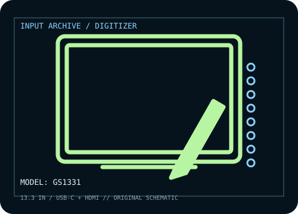

[ PEN TABLETS AND DIGITIZERS // IDENTIFIED COMPONENT ]
Huion Kamvas 13
13.3-inch pen display with a battery-free PenTech 3.0 stylus; identifier GS1331 distinguishes this model generation.

MODEL IDENTIFICATION: Manufacturer model / identifier: GS1331. Confirm the unit label, bundle contents, regional suffix, and revision against its product documentation before compatibility or repair work.
Model specifications
| Catalog subcategory | Pen tablets and digitizers |
|---|---|
| Exact model / SKU | GS1331 |
| Active area | 293.76 × 165.24 mm (11.6 × 6.5 in) display/pen area. |
| Pressure and pen technology | 8,192 pressure levels; battery-free PW517 PenTech 3.0 stylus with ±60° tilt. |
| Resolution / report rate | Full HD panel, 1,920 × 1,080; digitizer resolution 5,080 lpi and report rate >233 PPS per manufacturer specifications. |
| Interface | USB-C full-featured one-cable input on compatible hosts; alternatively the included 3-in-1 cable uses HDMI and USB-A for video/data. |
| Driver, OS and compatibility | Windows 7 or later, macOS 10.12 or later, and compatible Android devices are listed; install the Huion driver for pen/display controls and confirm device-specific USB-C video support. |
| Power | USB-C host connection can carry power; 3-in-1 setup may require the extra USB power lead or optional adapter, depending on host output. Pen needs no battery. |
| Calibration and service notes | In HuionTablet driver, calibrate the cursor to the display after setting the correct monitor arrangement and scaling; recalibrate following rotation or resolution changes. |
Preservation and service notes
USB-C host connection can carry power; 3-in-1 setup may require the extra USB power lead or optional adapter, depending on host output. Pen needs no battery. In HuionTablet driver, calibrate the cursor to the display after setting the correct monitor arrangement and scaling; recalibrate following rotation or resolution changes.
Record the as-found model label, accessories, host OS, driver/firmware version, calibration state, and test method. Published capability does not guarantee compatibility with a particular application or individual used unit.
Manufacturer sources
- Kamvas 13 (GS1331) — HuionManufacturer product specification page for active area, panel, pen, pressure, and connection options.
- Kamvas 13 downloads — HuionManufacturer download center; select the GS1331 product/revision and host OS before installing.
Manufacturer product and support pages can change. Save the applicable manual/driver release notes and verify the exact model and revision at setup.